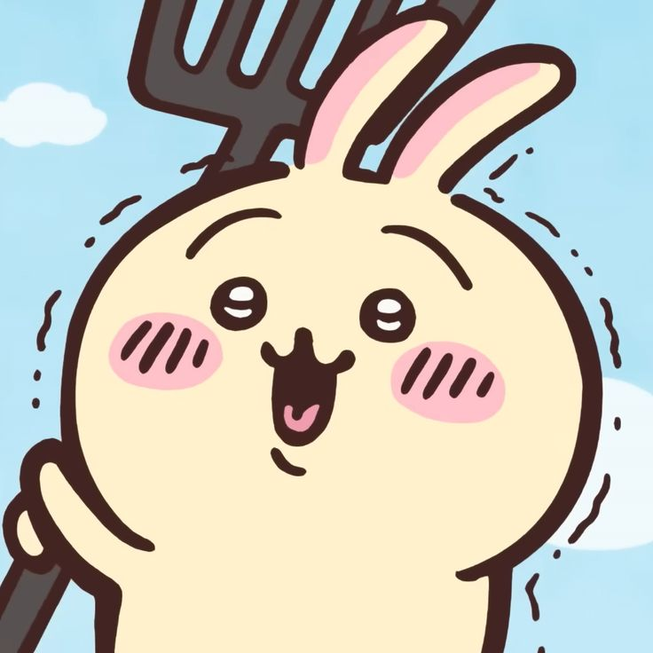
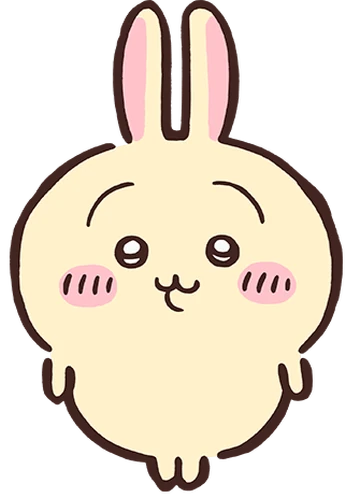
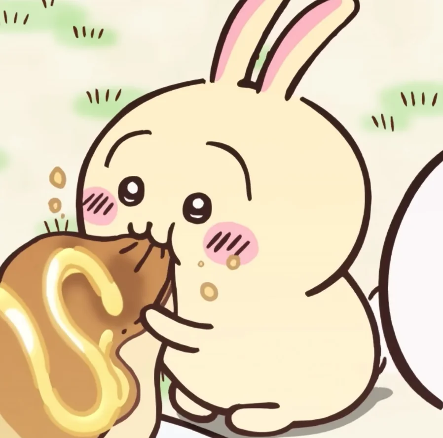
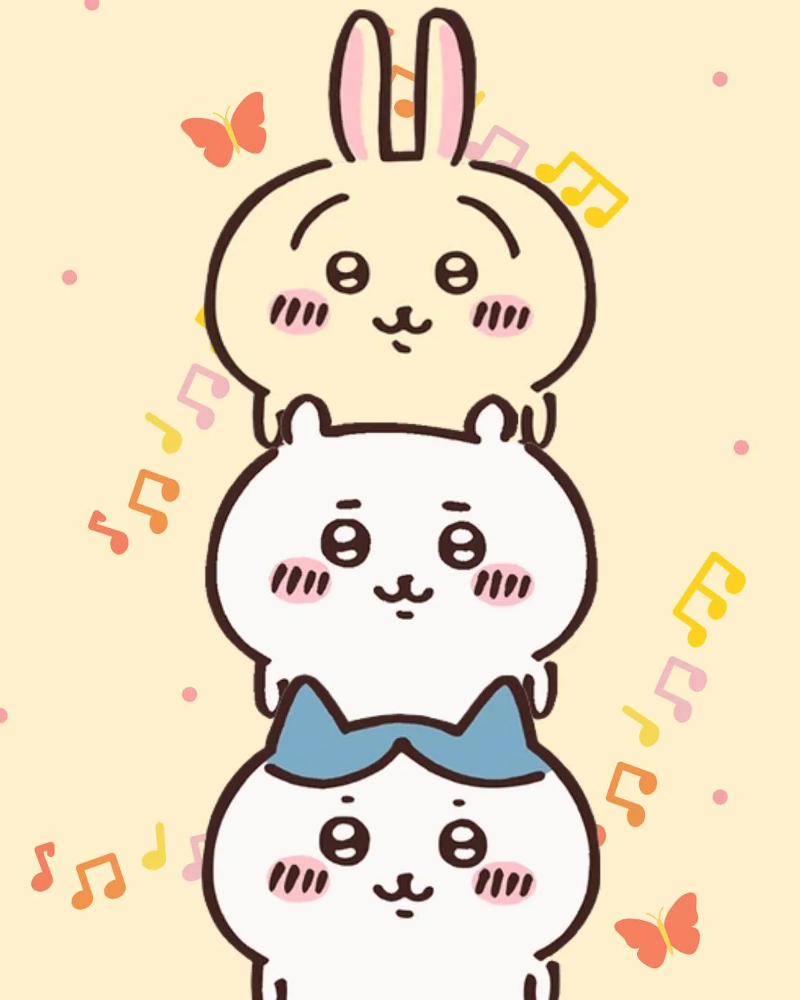

♡ el conejo más kawaii de Chiikawa ♡
Usagi (うさぎ) es uno de los tres protagonistas de la serie Chiikawa, creada por la artista japonesa Nagano.
Su nombre significa “conejo” en japonés. Es el mejor amigo de Chiikawa y Hachiware, y juntos forman el trío más adorable y caótico del mundo Chiikawa.
Apareció desde los primeros capítulos y se ha ganado el corazón de todos los fans con su energía infinita y su forma tan especial de comunicarse.

Usagi es un pequeño ser de color amarillo soleado con orejas largas y erguidas. Su diseño es puro kawaii:
Su arma es un bastón amarillo mágico que dispara fuegos artificiales por los dos extremos. ¡Y siempre lleva pijamas amarillos!

Usagi es el más enérgico, travieso y valiente del trío. Mientras Chiikawa es tímido, Usagi vive en su propio mundo de caos adorable.
Tiene la licencia de deshierbe de nivel 2 (¡la más alta del grupo!) y es un luchador sorprendente.

Usagi es libertad, caos dulce y lealtad infinita. Aunque a veces cause problemas, siempre está ahí para sus amigos… a su manera muy especial.
¡Yaha! Ura~ ¡Yaha!
